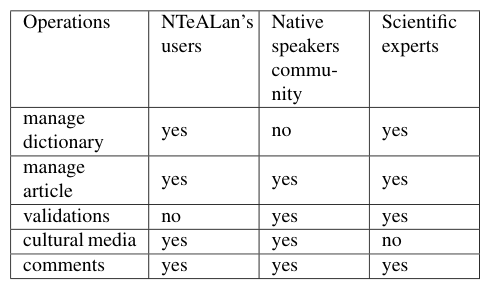
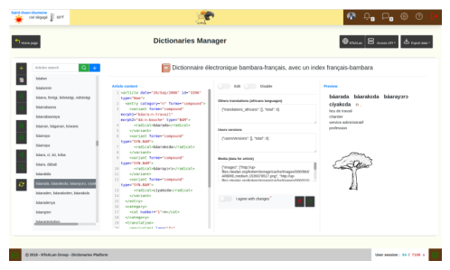
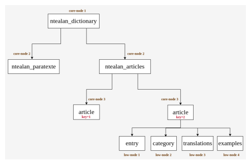
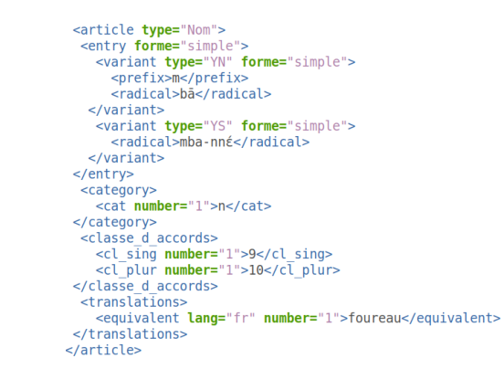
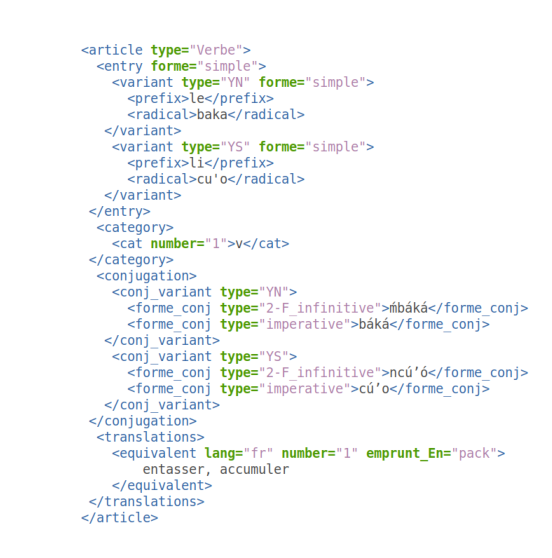

RAIL 2020Tafsiri ya mashine
Kujenga Rasilimali Zinazotegemea Ushirikiano katika Lugha za Afrika Zilizojaliwa: Mfano wa Jukwaa la Kamusi la NTeALan
Tafsiri ya mashine, haijakaguliwa na binadamu. Makala asili ndiyo toleo la rejeo; sentensi zilizopigiwa mstari ni zile ambazo ukaguzi wa kiotomatiki haukuwa na uhakika nazo.
Proceedings of the first workshop on Resources for African Indigenous Languages.
Tafsiri ya Ernst van Gassen (Arktos AI Lab), yenye leseni CC BY-NC 4.0 kama makala asili. Matumizi tena yanaruhusiwa kwa kutaja mwandishi, kwa matumizi yasiyo ya kibiashara tu. Waandishi asili hawajakagua wala kuidhinisha tafsiri hii.
Maandishi matupu ya kutumia tena, pamoja na leseni yake: Kiswahili · LESENI
Taasisi
Elvis MBONING1 2, Daniel BALEBA1, Jean Marc BASSAHAK1,Ornella WANDJI1
NTeALan1, ERTIM (INALCO)2
Tradex Makepe - Douala (Cameroon), 2 rue de Lille - Paris (France)
Anwani za barua pepe zimeondolewa kwa sababu za faragha. Zinapatikana katika PDF asilia.
Muhtasari
Katika muktadha ambapo rasilimali na zana za NLP za programu huria katika Lugha za Afrika ni chache na zimetawanyika, ni vigumu kwa watafiti kuziweka Lugha za Afrika kikamilifu katika algoriti za sasa za akili bandia. Ilianzishwa mwaka 2017, kwa lengo la kujenga jamii za wachangiaji wa kujitolea kuhusu lugha za asili za Afrika na / au lugha za kitaifa, utamaduni, teknolojia za NLP na akili bandia, shirika la NTeALan limeanzisha mfululizo wa majukwaa ya ushirikiano wa wavuti yaliyokusudiwa kuruhusu jamii zilizotajwa hapo juu kuunda na kusimamia rasilimali zao za leksikografia. Katika makala haya, tunawasilisha kwa upande mmoja matoleo ya kwanza ya majukwaa matatu: API ya REST ya kuhifadhi rasilimali za leksikografia, jukwaa la usimamizi wa kamusi na jukwaa shirikishi la kamusi; kwa upande mwingine, tunaelezea muundo wa data uliochaguliwa na kutumika kufunika rasilimali zetu. Baada ya kufanya majaribio na kamusi chache na baadhi ya maoni ya watumiaji, tunaamini kwamba mbinu na majukwaa ya ushirikiano pekee yanaweza kujibu kwa ufanisi uzalishaji wa rasilimali nzuri katika lugha za asili za Afrika na / au lugha za kitaifa.
Maneno Muhimu
Lugha za Afrika, NLP, rasilimali, uksimishaji, ushirikiano, kamusi, leksikografia, programu huria
1. Utangulizi
Lugha ina jukumu muhimu katika kufafanua utambulisho na ubinadamu wa watu binafsi. Kama Tunde Opeibi (Tunde, 2012) alivyosema "Katika Afrika, ushahidi unaonyesha kuwa lugha imekuwa kigezo chenye nguvu sana cha utambulisho wa kitaifa wa kikabila, na uaminifu wa kikabila ukizidi maslahi ya kitaifa". Hadi sasa, bara la Afrika lina zaidi ya lugha 2000, zaidi ya theluthi mbili kati yazo zikiwa na rasilimali chache. Miongoni mwa sababu zinazotetea maoni hayo, tunaweza kuorodhesha:
- Ukosefu wa sera imara ya kiisimu inayopendelea lugha hizi
- Kutokuwepo kwa lugha nyingi kati ya hizi katika nafasi ya kidijitali (mitandao ya kijamii, majukwaa ya mtandaoni au ya simu, n.k.) na katika mfumo wa elimu (ulioelezewa hasa na (Tadadjeu, 2004) na (Don, 2010))
- Ukosefu wa rasilimali za lugha za Afrika zilizofunguliwa chanzo (za maandishi na za kusema), zana za Usindikaji wa Lugha Asilia (NLP) na/au Uelewa wa Lugha Asilia (NLU) zinazopatikana kwa lugha nyingi hizi
- Ukosefu wa wataalamu wa NLP, NLU na Akili Bandia (AI) waliofunzwa barani na ambao ni wabobezi katika lugha hizi
- Ukosefu wa rasilimali za lugha za Afrika zilizo wazi (maandishi na mdomo) na zana za NLP na/au NLU zinazopatikana kwa lugha nyingi za Afrika
Kwa miaka kadhaa sasa, teknolojia za akili bandia, zikiwemo zile za NLP, zimechangia pakubwa katika kuibuka kiuchumi na kisayansi kwa lugha zenye rasilimali chache katika nchi za kaskazini, kutokana na upatikanaji wa rasilimali za leksikografia na terminografia kwa wingi wa kutosha. Lugha za Afrika hazinufaiki sana na zana hizi za akili kwa sababu ya uhaba wa data zilizopangwa na majukwaa shirikishi yanayopatikana kwa ajili ya kujenga misingi ya maarifa ya kiisimu na kiutamaduni. Ili kukidhi hitaji hili na kukamilisha mipango ambayo tayari ipo barani ((De Pauw et al., 2009), (Mboning, 2016), (Vydrin, Valentin and Rovenchak, Andrij and Maslinsky, Kirill, 2016), (Abate et al., 2018), (Mboning, Elvis and NTeALan contributors, 2017), (Mangeot and Enguehard, 2011), (De Schryver, 2010), chama cha Afrilex (Ruthven, 2005)), na pia ile kutoka vituo vya utafiti vya Afrika, Ulaya na Amerika, NTeALan (Teknolojia Mpya za Lugha za Afrika), iliyobobea katika utengenezaji wa zana za NLP na NLU kwa ajili ya kufundisha lugha na tamaduni za Afrika, imeanzisha jukwaa shirikishi na la programu huria kwa ajili ya kujenga rasilimali za kileksika kwa lugha za kitaifa za Afrika. Lengo letu kuu ni kushughulikia lugha zinazozungumzwa katika nchi za Afrika zinazosema Kifaransa.
Karatasi hii inaangazia ukuzaji wa rasilimali za isimu na utamaduni za Afrika, ambao ni hatua muhimu ya kuanzia kwa maendeleo ya kiteknolojia ya kila lugha ya Afrika. Tunaelezea jukwaa letu shirikishi la rasilimali za lugha linaloangazia data za kileksikografia. Jukwaa hili limegawanywa katika vipengele vitatu: API ya programu huria ya kuhifadhi nakala za kamusi (back-end), jukwaa la usimamizi wa kamusi na jukwaa shirikishi la kamusi (frontsend).
2. Muktadha wa kazi
2.1. Mradi wa NTeALan
Iliundwa mwaka 2017 na kusimamiwa na wasomi na Jumuiya ya Wasomi wa Afrika, NTeALan ni Chama kinachofanya kazi kwa ajili ya utekelezaji wa zana za kiteknolojia zenye akili, kwa ajili ya maendeleo, uendelezaji na ufundishaji wa lugha asilia na/au za kitaifa za Afrika. Malengo yetu ni kuweka katika mfumo wa kidijitali, kulinda na kuendeleza lugha hizi zisizo na rasilimali za kutosha kupitia zana za kidijitali na Akili Bandia. Kwa kufanya hivyo, tungependa kuwatia moyo na kuwasaidia vijana wa Kiafrika, ambao wako tayari kujifunza na/au kufundisha lugha zao za kwanza, na hivyo kujenga kizazi kipya cha Waafrika wanaofahamu umuhimu na changamoto za kumiliki lugha na tamaduni za bara hili. Lengo lingine la kazi za NTeALan ni kutoa data kwa watafiti wa ndani na kampuni ambayo ingewasaidia kuboresha ubora wa huduma na kazi zao, hivyo kujenga rasilimali za lugha za Afrika za chanzo wazi ni moja ya miradi yetu kuu.
2.2. Mbinu ya NTeALan: mfano unaotegemea ushirikiano
Njia yetu inategemea kabisa mfano wa ushirikiano (Holtzblatt na Beyer, 2017). Tungependa kuwaruhusu Waafrika wachangie ukuzi wa lugha zao wenyewe za mama, chini ya usimamizi wa wataalamu na wasomi wa lugha za Kiafrika. Mfano wetu unahusisha kuanzisha jamii kadhaa: jamii ya wazungumzaji wa lugha hizi, jamii ya wataalamu asilia (wadhamini wa maarifa ya kimapokeo, kitamaduni na kiisimu), jamii ya wasomi waliobobea katika teknolojia za kiisimu za Kiafrika na jamii ya washirika wa kijamii, kitaasisi na wa umma. Zikiwa zimepangwa kwa lugha, jumuiya hizi hufanya kazi pamoja kwa lengo moja: kujenga rasilimali za kiisimu na kitamaduni muhimu kwa mahitaji ya utafiti, kiteknolojia na kielimu.
Mbinu hii inatumika kwa miradi yote ya ndani ya NTeALan, hasa kwa majukwaa ya rasilimali za lugha, pamoja na uwakilishi wake.
3. Majukwaa ya rasilimali za lugha ya NTeALan
Mifumo yetu ya rasilimali za lugha imegawanywa katika sehemu tatu: muundo mmoja huru na miundo miwili inayotegemea. Usanifu huru hautumikii mbili nyingine tu bali pia miradi yote ya NTeALan kama inavyoonyeshwa kwenye kielelezo 1.

Kielelezo 1: NTeALan APIs na miundombinu ya huduma
Miundo mitatu ni matokeo ya mchakato mbili wa awali zinazotegemea aina ya ingizo (faili za PDF au picha). Mchakato wa kwanza unahusisha uwekaji kidijitali na wa pili ufuatanishaji:
- uwekaji kidijitali: kamusi katika muundo wa karatasi au wa kidijitali kama vile PDF, TIFF, PNG kwa OCR (Utambuzi wa Herufi kwa Macho) huwekwa kidijitali kwa Ujifunzajikina (Breuel, 2008); tunazifanyia ufafanuzi ili kuboresha OCR (tazama kielelezo 2); kila viambajengo vya makala (neno lililoangaziwa, tafsiri, uwekaji muktadha, unyambuaji, lahaja tofauti, n.k.) hugunduliwa kiotomatiki, hutolewa na kugeuzwa kuwa XML katika muundo wa XND (XML NTeALan Dictionary) baadaye.
- mfululizo: kamusi katika muundo wa nje (toolbox, XML, TEI, LMF) zinabadilishwa kiotomatiki kuwa muundo wa XND, kwa kutumia zana zetu za NLP za ndani.
Katika visa vyote viwili, tunaanza na kamusi ya karatasi au ya kidijitali na kuishia na kamusi ya XML katika muundo wa XND. Hii ya mwisho ni muundo wa kuingiza data wa kipekee kwa miundo mitatu yetu. Ikumbukwe kwamba michakato miwili iliyoelezwa hapo juu inadhibitiwa na wanaisimu wa NTeALan pekee. Katika kazi ya baadaye zitafunguliwa kwa wachangiaji wasio wanachama.

Kielelezo 2: Jukwaa la ufafanuzi wa kamusi za NTeALan linalotegemea zana ya Ocropy na linalotumika kufunza modeli ya Ujifunzajikina kwa OCR. Jukwaa hili liko chini ya leseni ya Creative Commons BY-NC-SA 3.0: (http://dico-edit.ntealan.net)
Kielelezo 2 kinaonyesha mfano wa ufafanuzi (kutoka kamusi ya lugha mbili ya Duala-Kifaransa) uliofanywa na wanachama wa NTeALan.
3.1. Muundo huru
Jukwaa huru ni jukwaa la REST API linalotegemea wavuti. Inaweza pia kuitwa hifadhidata ya usimamizi wa rasilimali za kileksikografia. Tovuti hii imejengwa ili kuwa rahisi na rahisi kupatikana, programu hii ya mtandao inahifadhi na kusambaza rasilimali zote za leksikografia zinazotokana na kazi ya ushirikiano iliyofanywa na wanachama wa jamii ya NTeALan na wachangishi wa nje.
Muundo huru hutumia zana zetu za ndani za NLP kusimamia muundo wa faili ya XND ili kuwapa watumiaji ufikiaji rahisi wa michango yao (angalia sehemu ya 4.). Shughuli zilizoorodheshwa kwenye jedwali 3.1. zinaidhinishwa kwa ufikiaji wazi kwa kila aina ya mtumiaji.

Jedwali 1: Haki za watumiaji kwa kila operesheni katika REST API ya NTeALan
Muundo huu unahifadhiwa kwenye https://apis.ntealan.net/ntealan/dictionaries na unapatikana chini ya leseni ya Creative Commons BY-NC-SA 3.0. Haki za ufikiaji, kwa kila aina ya mtumiaji, zinaelezwa katika jedwali 3.1..
3.2. Miundombinu inayotegemea
Miundombinu tegemezi ni majukwaa ya wavuti yanayotumia data iliyohifadhiwa katika hifadhidata ya REST API ya pamoja (jukwaa huru), ambayo huimarishwa na washiriki. Pia wanaweza kufanya shughuli zilizoelezwa kwenye jedwali 3.1. kupitia kiolesura chao cha wavuti.
3.2.1. Jukwaa la usimamizi wa kamusi
Kama jukwaa la wavuti, jukwaa la usimamizi wa kamusi ni toleo la usimamizi wa kielelezo la jukwaa la REST API. Inawezesha wanachama wa NTeALan (watumiaji) kusimamia kamusi, makala, watumiaji, maoni ya watumiaji, maombi ya upatikanaji na rasilimali za utamaduni.

Kielelezo 3: Jukwaa la usimamizi wa kamusi kwa ajili ya kusimamia rasilimali za kileksikografia za aina nyingi na lugha nyingi katika Lugha za Afrika. Jukwaa hili liko chini ya leseni ya NTeALan: (https://ntealan.net/dictionaries-platform)
Tofauti na majukwaa mawili yaliyotajwa hapo juu, hili si jukwaa la Programu huria. Inaweza kutumiwa pekee na jamii za NTeALan, katika ushirikiano wa moja kwa moja kati ya wanachama wa timu ya isimu na wanachama wengine wa chama.
3.2.2. Jukwaa shirikishi la kamusi
Kamusi shirikishi pia ni jukwaa la wavuti (angalia kielelezo 4) ambalo huboresha rasilimali za kileksikografia kutoka kwa REST API. Inawapa wanachama wa jumuiya za NTeALan (angalia sehemu ya 2.2.), hasa zaidi wazungumzaji asilia na wataalamu wa Lugha za Afrika, fursa ya kujenga, kwa mbinu shirikishi, rasilimali kama vile leksimu, vielelezo vya matukio ya kitamaduni, sauti na video (mchakato wa kurekodi) kulingana na taarifa za semantiki zinazotolewa na makala yaliyoandikwa katika lugha zao za asili. Rasilimali hizi zilizoshirikiwa huhifadhiwa na zinapatikana kwa uhuru kwa wachangiaji wote kupitia REST API yetu.

Kielelezo 4: Kamusi shirikishi za kushiriki rasilimali za leksikografia za aina nyingi na lugha nyingi katika Lugha za Afrika. Jukwaa hili liko chini ya leseni ya Creative Commons BY-NC-SA 3.0: (https://ntealan.net)
4. Rasilimali za lugha za NTeALan na uwakilishi
Rasilimali zetu nyingi za kamusi ni kamusi za lugha mbili za zamani (kutoka kwenye kazi za walinguisti) zinazopatikana kwenye wavuti kama chanzo wazi au chini ya leseni ya Creative Commons BY-NC-SA 3.0. Marejeleo ya vyanzo asilia na ya toleo za NTeALan yanatolewa kwenye majukwani yetu yote ambapo pia yanaweza kuchunguzwa.
4.1. Kamusi za rasilimali za lugha za Afrika
Kwa sasa tunapangisha na kushiriki kamusi 7 za lugha mbili kwenye API yetu ya REST. Ingawa idadi ya vifungu hadi sasa bado ni ndogo (kutoka 3 hadi 11,500), jumuiya inayokua inashiriki kila siku katika kujaza. Jedwali 4.1. inaonyesha takwimu za sasa za rasilimali zinazosimamiwa na API yetu.

Jedwali la 2: Hali ya sasa ya rasilimali za lugha za NTeALan zilizohifadhiwa katika REST API
Hata kama nyenzo za sasa hazitoshi na zinafunika lugha 7 tu, bado tunaridhika na msisimuko unaoanza kutokea katika jamii ya watumiaji nyuma ya majukwaa yetu. Hata hivyo, tungependa kubaini kama miundombinu yetu tofauti inalingana na rasilimali zilizotengenezwa, mzigo wa watumiaji waliounganishwa na mahitaji ya watumiaji. Mara tu tunapokamilisha majaribio kwenye jukwaa, hatua zinazofuata zitakuwa ni kueneza mfano huo kwa lugha nyingine za Afrika zilizojumuishwa katika kamusi zetu.
4.2. Maelezo ya muundo wa XML wa NTeALan
Kila jukwaa la usimamizi wa rasilimali za kileksika lina modeli yake ya kuunda na kuwasilisha data (mfano wa (Mangeot, 2006) na (Benoit and Turcan, 2006)). Fomati ya XML (haswa viwango vya TEI na LMF XML) leo ni chaguo la marejeleo kwa muundo wa data za lugha, leksikografia na terminografia. Hata hivyo, inadhihirika kuwa viwango hivi mara nyingi havirekebishwi kuwakilisha na kuelezea Lugha za Afrika. Kwa hakika, matukio kadhaa ya kiisimu kama vile dhana ya ngeli, usimamizi, tafsiri na ujanibishaji wa vibadala vya lahaja, na dhana ya midoko hayashughulikiwi kwa uwazi, licha ya mahitaji yote yaliyoelezwa kuhusiana na suala hilo.
Baada ya kuchambua muundo wa lugha ya Bantu kutoka Cameroon (Yemba, inayozungumzwa katika eneo la Magharibi), tuliamua kufafanua mfano wa muundo wa XML, ambao muundo wake ulitokana na familia kuu 4 za lugha za Afrika, yaani familia ya Afro-Asia, familia ya Niger-Kordofan, familia ya Nilo-Saharan na familia ya Koisan. Kanuni tatu ziliongoza uchaguzi wetu: uwakilishaji, kurahisisha na upanuzi:
- uwakilishaji: kanuni hii inalenga kuelezea data ya lugha katika kiwango kidogo zaidi cha kimofosintaksia yaani vijenzi vya neno (kiambishi awali+kiini+kiambishi tamati) na vijenzi vya kirai kama vile upatanisho wa ngeli (1/2, 2/4, 5/7).
- urahisishaji: tunajaribu kuchagua majina ya lebo za XML na lugha za kimataifa ambayo ni rahisi kueleweka kwa jamii za utafiti. Pia, tuliamua kutumia uwakilishaji wa XML ulio mstari, wenye wazazi wachache na watoto wengi katika nodi ileile ya mzazi.
- upanuzi: tungependa kutoa washirika wa nje uwezekano wa kupanua muundo mkuu wa XML wetu kwa kuongeza nodi mpya (nodu za watoto au nodu za wazazi), kulingana na kipengele kinachowakilishwa.
Tunabuni data yetu ya kimsingi ya leksikografia kwa nodi ya mzizi inayoitwa <ntealan_dictionary>, ambayo imegawanywa katika nodi ndogo mbili: <ntealan_paratexte> na <ntealan_articles>. <ntealan_paratexte> inaelezea metadata kuhusu toleo/ matoleo ya hati (muktadha wa utayarishaji wa kamusi, maelezo ya chanzo ya waandishi asilia na maelezo lengwa ya XML VERSION). <ntealan_articles> inaelezea makala zote za kamusi (<article>).
Kila makala ina nodi zake ndogo: <entry> (toleo la lahaja linalochakatwa kwa sasa), <category> (kategoria/za kisarufi zinazohusishwa na toleo/ matoleo ya lahaja), <translations> (tafsiri zinazohusishwa na lahaja, <examples> (muktadha wa matoleo ya lahaja). Kielelezo 5 kinaonyesha uwakilishi huu wa data.

Kielelezo 5: Uwakilishi wa XML wa kamusi za NTeALan
Upanuzi wa muundo wa makala na washiriki ni uwezekano tu katika node za chini, kama ilivyooneshwa katika picha 5, 6 na 7, ambayo inamaanisha kwamba mfano wa makala unaweza kurekebishwa kila kiwango cha node (kinarejelewa kwa kutumia kitambulisho).
Muundo wetu wa XND haujakusudiwa kuwekwa viwango ili kutumika kama marejeleo. Kinyume chake, hutumika kama muundo wa kati, unaohitajika na zana zetu za NLP za ndani na na miundo sanifu maarufu. Kwa kweli mara tu muundo wa nje unapofanywa kwa mfululizo katika XND, tuna uwezekano wa kubadili habari kuwa muundo mwingine kama ule wa kamusi za TEI na LMF. Vipengele hivi vitapatikana katika kiwango cha API hivi karibuni.

Picha 6: Mfano wa Xmlisation ya nomino ya makala mbā iliyochukuliwa kutoka kamusi ya Yemba-Kifaransa

Kielelezo 7: Sampuli ya Uxmlisation wa makala ya vitenzi lebaka iliyotolewa kutoka kamusi ya Yemba-Kifaransa.
5. Matatizo yaliyojitokeza na changamoto za baadaye
Utekelezaji wa majukwaa haya ya kwanza ulituwezesha kutambua changamoto kuu. Katika miaka ijayo, tutakazia fikira masuala hayo, tukiyatajirisha majukwaa yetu na kujaribu kuyaboresha kwa ajili ya siku zijazo.
5.1. Matatizo yaliyokutana
Kwa sasa tunakabiliwa na matatizo mawili makuu kwenye majukwaa ya NTeALan:
- ya kwanza ni idadi ndogo ya washiriki na rasilimali za IT zisizotosha. Wafanyakazi hawana wataalamu wote wanaohitajika (katika NLP, NLU na Lugha za Afrika) kwa malengo yaliyokusudiwa na matamanio makubwa. Kazi ya sasa inafanywa hasa na washiriki 4 wenye bidii wa shirika hilo. Kuhusu rasilimali za TEHAMA, hatuna miundombinu thabiti ya kutosha ya TEHAMA (seva, zana za uwandani, n.k.) kama inavyohitajika na kazi hiyo ya utafiti kuhusu Lugha za Afrika.
- la pili ni ukosefu wa ufadhili wa kufanya shughuli zetu za utafiti kuhusiana na uundaji wa zana za NLP na NLU. Ufadhili wetu unatokana hasa na michango ya wanachama wa chama, ambayo haitoshi kwa kuzingatia matamanio yetu ya sasa.
5.2. changamoto zaidi
Tamaa zetu ni kubwa na zitahitaji wafanyakazi wengi zaidi (wataalamu wa lugha) na mali za kifedha. Tungependa:
- Zaidi ya yote, watie moyo wataalamu wengi zaidi katika lugha na tamaduni za Kiafrika kutoka nchi mbalimbali za Afrika na katika ulimwengu wote mzima, wajiunge na ushirika wetu kwa sababu sisi pamoja twaweza kukabili magumu kwa urahisi.
- Kutafuta ufadhili kutoka kwa taasisi za kibinafsi na za umma, wafanyabiashara, makampuni, ambao wanaweza kusaidia kazi yetu ya utafiti na maendeleo endelevu ya programu zetu za ufundishaji wa Lugha za Afrika zenye rasilimali duni.
- Boresha na kuboresha majukwaa yote yaliyopo na kuyafungua zaidi kwa jumuiya ya kisayansi na kwa wasemaji wa lugha zilizotiwa ndani. Kwanza kabisa tutazingatia: jukwaa huru la ufundishaji wa lugha na utamaduni, Wakala Msaidizi wa Mazungumzo kwa Ufundishaji wa Lugha na jumba la makumbusho la kitamaduni la mtandaoni kwa ajili ya kulinda urithi wa kijamii na kitamaduni wa Afrika.
- Kuimarisha ushirikiano wetu na taasisi za kijamii na kitamaduni za Afrika, vyuo vikuu, maabara za utafiti na makampuni yaliyobobea katika maeneo yetu ya utafiti. Lengo ni kuunda jamii za wataalamu katika lugha, masuala ya kitekinolojia na kitamaduni kotekote katika bara hilo.
De Schryver (De Schryver, 2010, p.587) tayari alijiuliza kuhusu mambo mahususi ya leksikografia ya kielektroniki katika siku zijazo kwa maneno haya: "Mustakabali wa leksikografia ni wa kidijitali, hilo ni hakika. Lakini jinsi mustakabali huo wa kidijitali utakavyokuwa, ni jambo lisilo na uhakika zaidi.". Kazi hii inaonyesha wazi kwamba mfano unaotegemea ushirikiano, pamoja na majukwaa yenye nguvu ya NLP, inaweza kutoa maana kwa hali ya baadaye ya leksikografia ya elektroniki barani Afrika.
6. Hitimisho
Katika makala hii, tumeelezea majukwaa ya NTeALan na uwakilishi wake wa data ya XND, na tumeonyesha jinsi ushirika ulivyo muhimu siku hizi, kwa ajili ya ujenzi wa rasilimali na zana nzuri za lugha na leksikografia kwa lugha za Afrika. Tunaongoza, ndani kwa kushirikiana na washirika wetu wa kitaaluma (idara ya lugha na fasihi ya Afrika ya Chuo Kikuu cha Douala na timu ya ERTIM ya INALCO (Ufaransa)), shughuli nyingi za utafiti katika Akili Bandia, NLP, na NLU, ili kuchangia katika ukuaji wa viwanda wa Lugha za Afrika. Ni dhahiri kwamba mengi yamesalia kufanywa, hata hivyo matokeo ya kwanza ya utafiti wetu yamethibitika kuwa muhimu sana kwa matumizi yetu (wakala wa mazungumzo NTeABot, jukwaa la kujifunzia, jukwaa la tafsiri, n.k.) na yanaweza kutumiwa na watafiti wengine: hii inajumuisha data (katika miundo tofauti ya kawaida kama XML, TEI, LMF, XND) na zana. Tunaamini, kama Tunde Opeibi (Tunde, 2012, uk.289) alivyosema, kwamba "utofauti wa lugha barani Afrika bado unaweza kuwa kichocheo cha kukuza maendeleo ya kiutamaduni, kijamii, kiuchumi, kisiasa na kiteknolojia, pamoja na ukuaji endelevu na utawala bora barani Afrika."
7. Shukrani
Majukwaa haya yalitengenezwa na Elvis Mboning (REST API na jukwaa la Usimamizi wa Kamusi), Daniel Baleba (Kamusi shirikishi) na Jean-Marc Bassahak (Ubunifu wa Wavuti na violesura). Miradi ya NTeALan kwa kweli inaungwa mkono na Wizara ya Posta na Mawasiliano ya Kamerun, Idara ya lugha na fasihi ya Afrika ya Chuo Kikuu cha Douala (Kamerun), timu ya utafiti ya ERTIM ya INALCO na mfumo wa Fractals (Ufaransa). Tunaweza pia kuwataja: Profesa Jules Assoumou, Shukrani kwa Christian Bonog Bilap, Marcel Tomi Banou, Ntomb David, Ntomb Nicolas, Théophile Kengne, Yves Bertrand Dissake, Juanita Fopa, Damien Nouvel na kwa wachangiaji wengine.
Maelezo
1 Yaani na Elvis Mboning (Mhandisi wa Utafiti wa NLP katika INALCO) na Jean Marc Bassahak (Mkandarasi, Mbuni wa wavuti na msanidi programu), ambao baadaye walijiunga na Jules Assoumou, Mkuu wa Idara ya Isimu na Fasihi ya Kiafrika katika Chuo Kikuu cha Douala.
2 Hizi zinajumuisha vichanganuzi vya vipashio (tokenizers), vichanganuzi vya lemu (lemmatizers), vichanganuzi vya maandishi na zana za utatuzi wa utata wa kileksika zinazotumika kuchakata korasi za kileksikografia zenye kelele.
3 Mradi huu ulizaliwa kufuatia kazi ya utafiti ya Elvis Mboning katika Chuo Kikuu cha Douala na Chuo Kikuu cha Lille 3 (shahada ya Master): (Mboning, 2016) na (Mboning, 2017). Tunaweza kunukuu kazi nyingine zinazohusiana na uwanja huu kama (Assoumou, 2010), (Mangeot na Enguehard, 2011), (Vydrin et al., 2016), (Maslinsky, 2014), (Nouvel et al., 2016), nk.
4 Kwa lengo hili, tulijenga jukwaa jingine la kusimamia rasilimali ya kileksikografia: [https://ntealan.net/dictionaries-platform].
5 Ingawa matoleo ya kwanza ni ya lugha mbili, kamusi hizi zinakusudiwa kuwa za lugha nyingi, huku kipaumbele kikiwa kwa tafsiri katika lugha zote za kigeni zinazozungumzwa barani Afrika.
6 Kumbuka kwamba hata hivyo inawezekana katika viwango hivi kuongeza urasimi mpya (lebo na sifa) pamoja na madarasa yaliyopo.
8. Marejeo
Abate, S. T., Melese, M., Tachbelie, M. Y., Meshesha, M., Atinafu, S., Mulugeta, W., Assabie, Y., Abera, H., Ephrem, B., Abebe, T., Tsegaye, W., Lemma, A., Andargie, T., and Shifaw, S. (2018). Parallel Corpora for bi-lingual English-Ethiopian Languages Statistical Machine Translation. In Proceedings of the 27th International Conference on Computational Linguistics, pages 3102-3111, Santa Fe, New Mexico, USA, August. Association for Computational Linguistics.
Assoumou, J. (2010). Enseignement oral des langues et cultures africaines à l'école primaire. Éditions Clé, Yaoundé, Cameroun, 1st edition.
Benoit, J.-L. and Turcan, I. (2006). La TEI au service de la transmission documentaire ou de la valorisation des richesses patrimoniales : le cas difficile des dictionnaires anciens.
Breuel, T. M. (2008). The OCRopus open source OCR system. Proc.SPIE, 6815.
De Schryver, G.-M. (2010). State-of-the-Art Software to Support Intelligent Lexicography. ResearchGate, page 16.
Don, O. (2010). African languages in digital space. HSRC Press, page 168.
Holtzblatt, K. and Beyer, H. (2017). 7 - Building Experience Models. pages 147-206, January.
Mangeot, M. and Enguehard, C. (2011). Informatisation de dictionnaires langues africaines-français. In journées LTT 2011, page 11.
Mangeot, M. (2006). Dictionary building with the jibiki platform. In Cristina Onesti Elisa Corino, Carla Marello, editor, Proceedings of the 12th EURALEX International Congress, pages 185-188, Torino, Italy, sep. Edizioni dell'Orso.
Maslinsky, K. (2014). Daba: a model and tools for Manding corpora.
Mboning, E. (2016). De l'analyse du dictionnaire yémbafrançais à la conception de sa DTD et de sa réédition sur support numérique. Mémoire Master 1, Université de Lille 3.
Mboning, E. (2017). Vers une métalexicographie outillée : conception d'un outil pour le métalexicographe et application aux dictionnaires Larousse de 1856 à 1966. Mémoire Master 2, Université de Lille 3.
Nouvel, D., Donandt, K., Auffret, D., Maslinsky, K., Chiarcos, C., and Vydrin, V. (2016). Resources and Experiments for a Bambara POS Tagger. Intra Speech, page 14.
Ruthven, R. (2005). The African Association for Lexicography: After Ten Years. Lexikos journal, page 9.
Tadadjeu, M. (2004). African Language Needs in Information and Communication Technology (ICT). page 9.
Tunde, O. (2012). Investigating the Language Situation in Africa. In Language and Law, Language rights, pages 272-293. Oxford Handbooks in Linguistics, Great Clarendon street.
Vydrin, V., Rovenchak, A., and Maslinsky, K. (2016). Maninka Reference Corpus: A Presentation. In TALAf 2016 : Traitement automatique des langues africaines (écrit et parole). Atelier JEP-TALN-RECITAL 2016 - Paris le, Paris, France, July.
9. Marejeo ya Rasilimali za Lugha
De Pauw, Guy and Waiganjo Wagacha, Peter and de Schryver, Gilles-Maurice. (2009). The SAWA corpus: a parallel corpus English - Swahili.
Mboning, Elvis and NTeALan contributors. (2017). NTeALan lexicographic African language resources: an open-source REST API. NTeALan Project, distributed via NTeALan, Bantu resources, 1.0.
Vydrin, Valentin and Rovenchak, Andrij and Maslinsky, Kirill. (2016). Maninka Reference Corpus: A Presentation. Speecon Project, distributed via ELRA, Madingue resources, 1.0, ISLRN 613-489-674-355-0.
English na Kiswahili
Building Collaboration-based Resources in Endowed African Languages: Case of NTeALan Dictionaries Platform
Kujenga Rasilimali Zinazotegemea Ushirikiano katika Lugha za Afrika Zilizojaliwa: Mfano wa Jukwaa la Kamusi la NTeALan
Affiliations
Elvis MBONING1 2, Daniel BALEBA1, Jean Marc BASSAHAK1,Ornella WANDJI1
NTeALan1, ERTIM (INALCO)2
Tradex Makepe - Douala (Cameroon), 2 rue de Lille - Paris (France)
Taasisi
Elvis MBONING1 2, Daniel BALEBA1, Jean Marc BASSAHAK1,Ornella WANDJI1
NTeALan1, ERTIM (INALCO)2
Tradex Makepe - Douala (Cameroon), 2 rue de Lille - Paris (France)
Abstract
Muhtasari
In a context where open-source NLP resources and tools in African languages are scarce and dispersed, it is difficult for researchers to truly fit African languages into current algorithms of artificial intelligence. Created in 2017, with the aim of building communities of voluntary contributors around African native and/or national languages, cultures, NLP technologies and artificial intelligence, the NTeALan association has set up a series of web collaborative platforms intended to allow the aforementioned communities to create and administer their own lexicographic resources. In this article, we present on the one hand the first versions of the three platforms: the REST API for saving lexicographical resources, the dictionary management platform and the collaborative dictionary platform; on the other hand, we describe the data format chosen and used to encapsulate our resources. After experimenting with a few dictionaries and some users feedback, we are convinced that only collaboration-based approach and platforms can effectively respond to the production of good resources in African native and/or national languages.
Katika muktadha ambapo rasilimali na zana za NLP za programu huria katika Lugha za Afrika ni chache na zimetawanyika, ni vigumu kwa watafiti kuziweka Lugha za Afrika kikamilifu katika algoriti za sasa za akili bandia. Ilianzishwa mwaka 2017, kwa lengo la kujenga jamii za wachangiaji wa kujitolea kuhusu lugha za asili za Afrika na / au lugha za kitaifa, utamaduni, teknolojia za NLP na akili bandia, shirika la NTeALan limeanzisha mfululizo wa majukwaa ya ushirikiano wa wavuti yaliyokusudiwa kuruhusu jamii zilizotajwa hapo juu kuunda na kusimamia rasilimali zao za leksikografia. Katika makala haya, tunawasilisha kwa upande mmoja matoleo ya kwanza ya majukwaa matatu: API ya REST ya kuhifadhi rasilimali za leksikografia, jukwaa la usimamizi wa kamusi na jukwaa shirikishi la kamusi; kwa upande mwingine, tunaelezea muundo wa data uliochaguliwa na kutumika kufunika rasilimali zetu. Baada ya kufanya majaribio na kamusi chache na baadhi ya maoni ya watumiaji, tunaamini kwamba mbinu na majukwaa ya ushirikiano pekee yanaweza kujibu kwa ufanisi uzalishaji wa rasilimali nzuri katika lugha za asili za Afrika na / au lugha za kitaifa.
Keywords
Maneno Muhimu
African languages, NLP, resources, xmlisation, collaboration, dictionaries, lexicography, open-source
Lugha za Afrika, NLP, rasilimali, uksimishaji, ushirikiano, kamusi, leksikografia, programu huria
1. Introduction
1. Utangulizi
Language plays an important role in defining the identity and humanity of individuals. As Tunde Opeibi (Tunde, 2012) said "In Africa, evidence shows that language has become a very strong factor for ethno national identity, with the ethnic loyalty overriding the national interest". To date, the African continent has more than 2000 languages, more than two thirds of which are poorly endowed. Among the reasons justifying this observation, we can list:
Lugha ina jukumu muhimu katika kufafanua utambulisho na ubinadamu wa watu binafsi. Kama Tunde Opeibi (Tunde, 2012) alivyosema "Katika Afrika, ushahidi unaonyesha kuwa lugha imekuwa kigezo chenye nguvu sana cha utambulisho wa kitaifa wa kikabila, na uaminifu wa kikabila ukizidi maslahi ya kitaifa". Hadi sasa, bara la Afrika lina zaidi ya lugha 2000, zaidi ya theluthi mbili kati yazo zikiwa na rasilimali chache. Miongoni mwa sababu zinazotetea maoni hayo, tunaweza kuorodhesha:
The lack of a strong linguistic policy in favor of these languages
Ukosefu wa sera imara ya kiisimu inayopendelea lugha hizi
The absence of the majority of these languages in the digital space (social networks, online or mobile platform, etc.) and in the educational system (mainly described by (Tadadjeu, 2004) and (Don, 2010))
Kutokuwepo kwa lugha nyingi kati ya hizi katika nafasi ya kidijitali (mitandao ya kijamii, majukwaa ya mtandaoni au ya simu, n.k.) na katika mfumo wa elimu (ulioelezewa hasa na (Tadadjeu, 2004) na (Don, 2010))
The lack of open-source African linguistic resources (textual and oral), Natural Language Processing (NLP) and/or Natural Language Understanding (NLU) tools available for most of these languages
Ukosefu wa rasilimali za lugha za Afrika zilizofunguliwa chanzo (za maandishi na za kusema), zana za Usindikaji wa Lugha Asilia (NLP) na/au Uelewa wa Lugha Asilia (NLU) zinazopatikana kwa lugha nyingi hizi
The lack of experts in NLP, NLU and Artificial Intelligence (AI) trained in the continent and who are specialists in these languages
Ukosefu wa wataalamu wa NLP, NLU na Akili Bandia (AI) waliofunzwa barani na ambao ni wabobezi katika lugha hizi
The lack of open-source African linguistic resources (textual and oral) and NLP and/or NLU tools available for most of these languages
Ukosefu wa rasilimali za lugha za Afrika zilizo wazi (maandishi na mdomo) na zana za NLP na/au NLU zinazopatikana kwa lugha nyingi za Afrika
For several years now, artificial intelligence technologies, including those of NLP, have greatly contributed to the economic and scientific emergence of poorly endowed languages in northern countries, thanks to the availability of lexicography and terminography resources in sufficient quantity. African languages benefit very little from these intelligent tools because of the scarcity of structured data and collaborative platforms available for building linguistic and cultural knowledge bases. In order to meet this need and complement the initiatives already present on the continent ((De Pauw et al., 2009), (Mboning, 2016), (Vydrin, Valentin and Rovenchak, Andrij and Maslinsky, Kirill, 2016), (Abate et al., 2018), (Mboning, Elvis and NTeALan contributors, 2017), (Mangeot and Enguehard, 2011), (De Schryver, 2010), Afrilex association (Ruthven, 2005)), and also those from African, European and American research centers, NTeALan (New Technologies for African Languages), specialized in the development of NLP and NLU tools for teaching African languages and cultures, has set up a collaborative and open-source platform for building lexical resources for African national languages. Our main goal is to deal with languages spoken in French-speaking African countries.
Kwa miaka kadhaa sasa, teknolojia za akili bandia, zikiwemo zile za NLP, zimechangia pakubwa katika kuibuka kiuchumi na kisayansi kwa lugha zenye rasilimali chache katika nchi za kaskazini, kutokana na upatikanaji wa rasilimali za leksikografia na terminografia kwa wingi wa kutosha. Lugha za Afrika hazinufaiki sana na zana hizi za akili kwa sababu ya uhaba wa data zilizopangwa na majukwaa shirikishi yanayopatikana kwa ajili ya kujenga misingi ya maarifa ya kiisimu na kiutamaduni. Ili kukidhi hitaji hili na kukamilisha mipango ambayo tayari ipo barani ((De Pauw et al., 2009), (Mboning, 2016), (Vydrin, Valentin and Rovenchak, Andrij and Maslinsky, Kirill, 2016), (Abate et al., 2018), (Mboning, Elvis and NTeALan contributors, 2017), (Mangeot and Enguehard, 2011), (De Schryver, 2010), chama cha Afrilex (Ruthven, 2005)), na pia ile kutoka vituo vya utafiti vya Afrika, Ulaya na Amerika, NTeALan (Teknolojia Mpya za Lugha za Afrika), iliyobobea katika utengenezaji wa zana za NLP na NLU kwa ajili ya kufundisha lugha na tamaduni za Afrika, imeanzisha jukwaa shirikishi na la programu huria kwa ajili ya kujenga rasilimali za kileksika kwa lugha za kitaifa za Afrika. Lengo letu kuu ni kushughulikia lugha zinazozungumzwa katika nchi za Afrika zinazosema Kifaransa.
This paper focuses on the development of African linguistics and cultural resources, which is an important starting point for the technological step forward of each African language. We describe our collaborative language resources platform focusing on lexicographic data. This platform is divided into three components: the open-source dictionary backup API (back-end), the dictionary management platform and the collaborative dictionary platform (frontsend).
Karatasi hii inaangazia ukuzaji wa rasilimali za isimu na utamaduni za Afrika, ambao ni hatua muhimu ya kuanzia kwa maendeleo ya kiteknolojia ya kila lugha ya Afrika. Tunaelezea jukwaa letu shirikishi la rasilimali za lugha linaloangazia data za kileksikografia. Jukwaa hili limegawanywa katika vipengele vitatu: API ya programu huria ya kuhifadhi nakala za kamusi (back-end), jukwaa la usimamizi wa kamusi na jukwaa shirikishi la kamusi (frontsend).
2. Context of the work
2. Muktadha wa kazi
2.1. NTeALan project
2.1. Mradi wa NTeALan
Created in 2017 and managed by academics and the African Learned Society, NTeALan is an Association that works for the implementation of intelligent technological tools, for the development, promotion and teaching of African native and/or national languages. Our goals are to digitize, safeguard and promote these poorly endowed languages through digital tools and Artificial Intelligence. By doing so, we would like to encourage and help young Africans, who are willing to learn and/or teach their mother tongues, and therefore build a new generation of Africans aware of the importance and challenges of appropriating the languages and cultures of the continent. Another purpose of NTeALan's work is to provide local researchers and companies with data which could help them improve the quality of their services and work, hence building open-source African languages resources is one of our core projects.
Iliundwa mwaka 2017 na kusimamiwa na wasomi na Jumuiya ya Wasomi wa Afrika, NTeALan ni Chama kinachofanya kazi kwa ajili ya utekelezaji wa zana za kiteknolojia zenye akili, kwa ajili ya maendeleo, uendelezaji na ufundishaji wa lugha asilia na/au za kitaifa za Afrika. Malengo yetu ni kuweka katika mfumo wa kidijitali, kulinda na kuendeleza lugha hizi zisizo na rasilimali za kutosha kupitia zana za kidijitali na Akili Bandia. Kwa kufanya hivyo, tungependa kuwatia moyo na kuwasaidia vijana wa Kiafrika, ambao wako tayari kujifunza na/au kufundisha lugha zao za kwanza, na hivyo kujenga kizazi kipya cha Waafrika wanaofahamu umuhimu na changamoto za kumiliki lugha na tamaduni za bara hili. Lengo lingine la kazi za NTeALan ni kutoa data kwa watafiti wa ndani na kampuni ambayo ingewasaidia kuboresha ubora wa huduma na kazi zao, hivyo kujenga rasilimali za lugha za Afrika za chanzo wazi ni moja ya miradi yetu kuu.
2.2. NTeALan's approach: collaboration-based model
2.2. Mbinu ya NTeALan: mfano unaotegemea ushirikiano
Our approach is exclusively based on the collaboration model (Holtzblatt and Beyer, 2017). We would like to allow African people to contribute to the development of their own mother tongues, under the supervision of specialists and academics of African languages. Our model involves setting up several communities: a community of speakers of these languages, a community of native specialists (guarantors of traditional, cultural and linguistic knowledge), a community of academics specialized in African linguistic technologies and a community of social, institutional and public partners. Grouped by languages, these communities work together with the same goal: building linguistic and cultural resources useful for research, technological and educational needs.
Njia yetu inategemea kabisa mfano wa ushirikiano (Holtzblatt na Beyer, 2017). Tungependa kuwaruhusu Waafrika wachangie ukuzi wa lugha zao wenyewe za mama, chini ya usimamizi wa wataalamu na wasomi wa lugha za Kiafrika. Mfano wetu unahusisha kuanzisha jamii kadhaa: jamii ya wazungumzaji wa lugha hizi, jamii ya wataalamu asilia (wadhamini wa maarifa ya kimapokeo, kitamaduni na kiisimu), jamii ya wasomi waliobobea katika teknolojia za kiisimu za Kiafrika na jamii ya washirika wa kijamii, kitaasisi na wa umma. Zikiwa zimepangwa kwa lugha, jumuiya hizi hufanya kazi pamoja kwa lengo moja: kujenga rasilimali za kiisimu na kitamaduni muhimu kwa mahitaji ya utafiti, kiteknolojia na kielimu.
This approach applies to all NTeALan's internal projects, especially to the language resources platforms, as well as their representation.
Mbinu hii inatumika kwa miradi yote ya ndani ya NTeALan, hasa kwa majukwaa ya rasilimali za lugha, pamoja na uwakilishi wake.
3. NTeALan's language resource platforms
3. Majukwaa ya rasilimali za lugha ya NTeALan
Our language resource platforms are divided into three parts: one independent architecture and two dependent architectures. The independent architecture serves not only the two others but also all NTeALan's projects as illustrated in figure 1.
Mifumo yetu ya rasilimali za lugha imegawanywa katika sehemu tatu: muundo mmoja huru na miundo miwili inayotegemea. Usanifu huru hautumikii mbili nyingine tu bali pia miradi yote ya NTeALan kama inavyoonyeshwa kwenye kielelezo 1.
Figure 1: NTeALan APIs and service infrastructures
Kielelezo 1: NTeALan APIs na miundombinu ya huduma
The three architectures are the fruit of two upstream processes depending on the input type (PDF files or images). The first process involves digitization and the second serialization:
Miundo mitatu ni matokeo ya mchakato mbili wa awali zinazotegemea aina ya ingizo (faili za PDF au picha). Mchakato wa kwanza unahusisha uwekaji kidijitali na wa pili ufuatanishaji:
digitization: dictionaries in paper or digital format like PDF, TIFF, PNG by OCR (Optical Character Recognition) are digitized with Deep learning (Breuel, 2008); we annotate them to improve the OCR (see figure 2); each article constituents (featured word, translation, contextualization, conjugation, dialect variant, etc.) are automatically detected, extracted and xmlized in XND (XML NTeALan Dictionary) format afterwards.
uwekaji kidijitali: kamusi katika muundo wa karatasi au wa kidijitali kama vile PDF, TIFF, PNG kwa OCR (Utambuzi wa Herufi kwa Macho) huwekwa kidijitali kwa Ujifunzajikina (Breuel, 2008); tunazifanyia ufafanuzi ili kuboresha OCR (tazama kielelezo 2); kila viambajengo vya makala (neno lililoangaziwa, tafsiri, uwekaji muktadha, unyambuaji, lahaja tofauti, n.k.) hugunduliwa kiotomatiki, hutolewa na kugeuzwa kuwa XML katika muundo wa XND (XML NTeALan Dictionary) baadaye.
serialization: dictionaries in an external format (toolbox, XML, TEI, LMF) are automatically serialized in XND format, using our internal NLP tools.
mfululizo: kamusi katika muundo wa nje (toolbox, XML, TEI, LMF) zinabadilishwa kiotomatiki kuwa muundo wa XND, kwa kutumia zana zetu za NLP za ndani.
In both cases, we start with a paper or digital dictionary and end up with a XML dictionary in XND format. The latter is the unique data entry format for our three architectures. It should be noted that the two processes described above are controlled by NTeALan linguists only. In future work they will be opened to non-member contributors.
Katika visa vyote viwili, tunaanza na kamusi ya karatasi au ya kidijitali na kuishia na kamusi ya XML katika muundo wa XND. Hii ya mwisho ni muundo wa kuingiza data wa kipekee kwa miundo mitatu yetu. Ikumbukwe kwamba michakato miwili iliyoelezwa hapo juu inadhibitiwa na wanaisimu wa NTeALan pekee. Katika kazi ya baadaye zitafunguliwa kwa wachangiaji wasio wanachama.
Figure 2: NTeALan dictionaries annotation platform based on Ocropy tool and used to train Deep learning model for OCR. This platform is under license on Creative Commons BY-NC-SA 3.0 license: (http://dico-edit.ntealan.net)
Kielelezo 2: Jukwaa la ufafanuzi wa kamusi za NTeALan linalotegemea zana ya Ocropy na linalotumika kufunza modeli ya Ujifunzajikina kwa OCR. Jukwaa hili liko chini ya leseni ya Creative Commons BY-NC-SA 3.0: (http://dico-edit.ntealan.net)
Figure 2 shows an example of annotation (from the bilingual Duala-French dictionary) performed by NTeALan's members.
Kielelezo 2 kinaonyesha mfano wa ufafanuzi (kutoka kamusi ya lugha mbili ya Duala-Kifaransa) uliofanywa na wanachama wa NTeALan.
3.1. Independent architecture
3.1. Muundo huru
The independent platform is a web-based REST API platform. It can also be called lexicographical resources management database. Built to be simple and accessible, this web application stores and distributes all the lexicographic resources resulting from the collaborative work done by NTeALan's communities members and external contributors.
Jukwaa huru ni jukwaa la REST API linalotegemea wavuti. Inaweza pia kuitwa hifadhidata ya usimamizi wa rasilimali za kileksikografia. Tovuti hii imejengwa ili kuwa rahisi na rahisi kupatikana, programu hii ya mtandao inahifadhi na kusambaza rasilimali zote za leksikografia zinazotokana na kazi ya ushirikiano iliyofanywa na wanachama wa jamii ya NTeALan na wachangishi wa nje.
The independent architecture uses our internal NLP tools to manage the XND file format in order to give users easy access to their contributions (see section 4.). The operations listed in table 3.1. are authorized in open access for each type of user.
Muundo huru hutumia zana zetu za ndani za NLP kusimamia muundo wa faili ya XND ili kuwapa watumiaji ufikiaji rahisi wa michango yao (angalia sehemu ya 4.). Shughuli zilizoorodheshwa kwenye jedwali 3.1. zinaidhinishwa kwa ufikiaji wazi kwa kila aina ya mtumiaji.
Table 1: Users' privileges for each operation in NTeALan's REST API
Jedwali 1: Haki za watumiaji kwa kila operesheni katika REST API ya NTeALan
This architecture is hosted at https://apis.ntealan.net/ntealan/dictionaries and is accessible under the Creative Commons BY-NC-SA 3.0 license. The access rights, for each type of user, is described in table 3.1..
Muundo huu unahifadhiwa kwenye https://apis.ntealan.net/ntealan/dictionaries na unapatikana chini ya leseni ya Creative Commons BY-NC-SA 3.0. Haki za ufikiaji, kwa kila aina ya mtumiaji, zinaelezwa katika jedwali 3.1..
3.2. Dependent architectures
3.2. Miundombinu inayotegemea
Dependent architectures are web platforms which use the data stored in common REST API database (Independent platform), the latter are enriched by contributors. They can also perform the operations described in table 3.1. through their web interface.
Miundombinu tegemezi ni majukwaa ya wavuti yanayotumia data iliyohifadhiwa katika hifadhidata ya REST API ya pamoja (jukwaa huru), ambayo huimarishwa na washiriki. Pia wanaweza kufanya shughuli zilizoelezwa kwenye jedwali 3.1. kupitia kiolesura chao cha wavuti.
3.2.1. Dictionaries management platform
3.2.1. Jukwaa la usimamizi wa kamusi
As a web platform, the dictionaries management platform is a graphical management version of the REST API platform. It allows NTeALan members (users) to manage dictionaries, articles, users, users comments, access requests and cultural resources.
Kama jukwaa la wavuti, jukwaa la usimamizi wa kamusi ni toleo la usimamizi wa kielelezo la jukwaa la REST API. Inawezesha wanachama wa NTeALan (watumiaji) kusimamia kamusi, makala, watumiaji, maoni ya watumiaji, maombi ya upatikanaji na rasilimali za utamaduni.
Figure 3: Dictionaries management platform for managing multi-modal and multilingual lexicographical resources in African languages. This platform is under NTeALan's license: (https://ntealan.net/dictionaries-platform)
Kielelezo 3: Jukwaa la usimamizi wa kamusi kwa ajili ya kusimamia rasilimali za kileksikografia za aina nyingi na lugha nyingi katika Lugha za Afrika. Jukwaa hili liko chini ya leseni ya NTeALan: (https://ntealan.net/dictionaries-platform)
Unlike the two above-mentioned platforms, this is not an open-source platform. It can be used strictly by NTeALan's communities, in a direct collaboration between the linguistics team members and other association members.
Tofauti na majukwaa mawili yaliyotajwa hapo juu, hili si jukwaa la Programu huria. Inaweza kutumiwa pekee na jamii za NTeALan, katika ushirikiano wa moja kwa moja kati ya wanachama wa timu ya isimu na wanachama wengine wa chama.
3.2.2. Collaborative dictionary platform
3.2.2. Jukwaa shirikishi la kamusi
The collaborative dictionary is also a web platform (see figure 4) which enriches the lexicographic resources from the REST API. It gives NTeALan's communities members (see section 2.2.), more precisely native speakers and African languages experts, the opportunity to build, in a collaborative approach, resources like lexicons, illustration of cultural phenomenon, sounds and videos (recording process) based on semantic information provided by article written in their native languages. These shared resources are stored and freely available for all contributors through our REST API.
Kamusi shirikishi pia ni jukwaa la wavuti (angalia kielelezo 4) ambalo huboresha rasilimali za kileksikografia kutoka kwa REST API. Inawapa wanachama wa jumuiya za NTeALan (angalia sehemu ya 2.2.), hasa zaidi wazungumzaji asilia na wataalamu wa Lugha za Afrika, fursa ya kujenga, kwa mbinu shirikishi, rasilimali kama vile leksimu, vielelezo vya matukio ya kitamaduni, sauti na video (mchakato wa kurekodi) kulingana na taarifa za semantiki zinazotolewa na makala yaliyoandikwa katika lugha zao za asili. Rasilimali hizi zilizoshirikiwa huhifadhiwa na zinapatikana kwa uhuru kwa wachangiaji wote kupitia REST API yetu.
Figure 4: Collaborative dictionaries for sharing multi-modal and multilingual lexicographical resources in African languages. This platform is under Creative Commons BY-NC-SA 3.0 license: (https://ntealan.net)
Kielelezo 4: Kamusi shirikishi za kushiriki rasilimali za leksikografia za aina nyingi na lugha nyingi katika Lugha za Afrika. Jukwaa hili liko chini ya leseni ya Creative Commons BY-NC-SA 3.0: (https://ntealan.net)
4. NTeALan language resources and representation
4. Rasilimali za lugha za NTeALan na uwakilishi
Most of our dictionaries resources are old bilingual dictionaries (from linguists' work) found on the web as open-source or under Creative Commons BY-NC-SA 3.0 license. The references to the original sources and to the NTeALan's versions are provided on all our platforms from where they can also be consulted.
Rasilimali zetu nyingi za kamusi ni kamusi za lugha mbili za zamani (kutoka kwenye kazi za walinguisti) zinazopatikana kwenye wavuti kama chanzo wazi au chini ya leseni ya Creative Commons BY-NC-SA 3.0. Marejeleo ya vyanzo asilia na ya toleo za NTeALan yanatolewa kwenye majukwani yetu yote ambapo pia yanaweza kuchunguzwa.
4.1. African language resource dictionaries
4.1. Kamusi za rasilimali za lugha za Afrika
We currently host and share 7 bilingual dictionaries on our REST API. Although the number of entries to date is still relatively limited (from 3 to 11,500 entries), a growing community is participating daily in their filling. Table 4.1. shows the current statistics on the resources managed by our API.
Kwa sasa tunapangisha na kushiriki kamusi 7 za lugha mbili kwenye API yetu ya REST. Ingawa idadi ya vifungu hadi sasa bado ni ndogo (kutoka 3 hadi 11,500), jumuiya inayokua inashiriki kila siku katika kujaza. Jedwali 4.1. inaonyesha takwimu za sasa za rasilimali zinazosimamiwa na API yetu.
Table 2: State of the art of NTeALan language resources currently saved in the REST API
Jedwali la 2: Hali ya sasa ya rasilimali za lugha za NTeALan zilizohifadhiwa katika REST API
Even if the current resources are insufficient and cover only 7 sub-saharan languages, we are nevertheless satisfied with the craze that is beginning to appear within the communities of users behind our platforms. However we would like to determine whether our different infrastructures fit with the resources produced, the load of connected users and the users needs. Once we have completed the tests on the platform, the next steps will be generalizing the model to the other African languages included in our dictionaries.
Hata kama nyenzo za sasa hazitoshi na zinafunika lugha 7 tu, bado tunaridhika na msisimuko unaoanza kutokea katika jamii ya watumiaji nyuma ya majukwaa yetu. Hata hivyo, tungependa kubaini kama miundombinu yetu tofauti inalingana na rasilimali zilizotengenezwa, mzigo wa watumiaji waliounganishwa na mahitaji ya watumiaji. Mara tu tunapokamilisha majaribio kwenye jukwaa, hatua zinazofuata zitakuwa ni kueneza mfano huo kwa lugha nyingine za Afrika zilizojumuishwa katika kamusi zetu.
4.2. Description of NTeALan's XML format
4.2. Maelezo ya muundo wa XML wa NTeALan
Each lexical resource management platform has its own model for structuring and presenting data (sample of (Mangeot, 2006) and (Benoit and Turcan, 2006)). The XML format (mainly TEI and LMF XML standards) is today a reference choice for structuring linguistic, lexicographic and terminographic data. However, it turns out that these standards are not often adapted to represent and describe African languages. Indeed, several linguistic phenomena such as the concept of nominal class, the management, translation and localisation of dialect variants, and the notion of clicks are not explicitly treated, despite all the needs expressed with regard to the matter.
Kila jukwaa la usimamizi wa rasilimali za kileksika lina modeli yake ya kuunda na kuwasilisha data (mfano wa (Mangeot, 2006) na (Benoit and Turcan, 2006)). Fomati ya XML (haswa viwango vya TEI na LMF XML) leo ni chaguo la marejeleo kwa muundo wa data za lugha, leksikografia na terminografia. Hata hivyo, inadhihirika kuwa viwango hivi mara nyingi havirekebishwi kuwakilisha na kuelezea Lugha za Afrika. Kwa hakika, matukio kadhaa ya kiisimu kama vile dhana ya ngeli, usimamizi, tafsiri na ujanibishaji wa vibadala vya lahaja, na dhana ya midoko hayashughulikiwi kwa uwazi, licha ya mahitaji yote yaliyoelezwa kuhusiana na suala hilo.
After analyzing the structure of a Bantu language from Cameroon (Yemba, spoken in West region), we decided to define a proprietary XML structuring model, whose structure was inspired by the 4 major families of African languages, namely the Afro-Asian family, the Niger-Kordofan family, Nilo-Saharan family and the Koisan family. Three principles guided our choice: representation, simplification and extensibility:
Baada ya kuchambua muundo wa lugha ya Bantu kutoka Cameroon (Yemba, inayozungumzwa katika eneo la Magharibi), tuliamua kufafanua mfano wa muundo wa XML, ambao muundo wake ulitokana na familia kuu 4 za lugha za Afrika, yaani familia ya Afro-Asia, familia ya Niger-Kordofan, familia ya Nilo-Saharan na familia ya Koisan. Kanuni tatu ziliongoza uchaguzi wetu: uwakilishaji, kurahisisha na upanuzi:
representation: this principle aims at describing language data at the smallest morpho-syntactic level i.e. word components (prefix+radical+suffix) and phrase components like class accord (1/2, 2/4, 5/7).
uwakilishaji: kanuni hii inalenga kuelezea data ya lugha katika kiwango kidogo zaidi cha kimofosintaksia yaani vijenzi vya neno (kiambishi awali+kiini+kiambishi tamati) na vijenzi vya kirai kama vile upatanisho wa ngeli (1/2, 2/4, 5/7).
simplification: we try to choose XML tag names and international languages that are easily comprehensible for the research communities. Also, we decided to use a linear XML representation, with less parents and more children in the same parent node.
urahisishaji: tunajaribu kuchagua majina ya lebo za XML na lugha za kimataifa ambayo ni rahisi kueleweka kwa jamii za utafiti. Pia, tuliamua kutumia uwakilishaji wa XML ulio mstari, wenye wazazi wachache na watoto wengi katika nodi ileile ya mzazi.
extensibility: we would like to give external contributors the possibility to extend our main XML structure by adding new nodes (children or parent nodes), depending on the element to represent.
upanuzi: tungependa kutoa washirika wa nje uwezekano wa kupanua muundo mkuu wa XML wetu kwa kuongeza nodi mpya (nodu za watoto au nodu za wazazi), kulingana na kipengele kinachowakilishwa.
We design our core-node lexicographic data with a root node called <ntealan_dictionary>, which is divided into two subnodes: <ntealan_paratexte> and <ntealan_articles>. <ntealan_paratexte> describes the metadata about the version(s) of the document (context of the dictionaries production, source description of the original authors and target description of the XML VERSION). <ntealan_articles> describes all the dictionary articles (<article>).
Tunabuni data yetu ya kimsingi ya leksikografia kwa nodi ya mzizi inayoitwa <ntealan_dictionary>, ambayo imegawanywa katika nodi ndogo mbili: <ntealan_paratexte> na <ntealan_articles>. <ntealan_paratexte> inaelezea metadata kuhusu toleo/ matoleo ya hati (muktadha wa utayarishaji wa kamusi, maelezo ya chanzo ya waandishi asilia na maelezo lengwa ya XML VERSION). <ntealan_articles> inaelezea makala zote za kamusi (<article>).
Each article has its own subnodes: <entry> (dialect variant currently processed), <category> (grammatical categor(y/ies) associated to the dialect variant(s)), <translations> (translations associated to the dialect, <examples> (contextualisation of the dialect variants). Figure 5 illustrates this data representation.
Kila makala ina nodi zake ndogo: <entry> (toleo la lahaja linalochakatwa kwa sasa), <category> (kategoria/za kisarufi zinazohusishwa na toleo/ matoleo ya lahaja), <translations> (tafsiri zinazohusishwa na lahaja, <examples> (muktadha wa matoleo ya lahaja). Kielelezo 5 kinaonyesha uwakilishi huu wa data.
Figure 5: NTeALan dictionaries XML representation
Kielelezo 5: Uwakilishi wa XML wa kamusi za NTeALan
The extension of the article structure by contributors is only possible in low-node, as shown in figures 5, 6 and 7, which means that the article model can be updated at each node level (referred to by an id).
Upanuzi wa muundo wa makala na washiriki ni uwezekano tu katika node za chini, kama ilivyooneshwa katika picha 5, 6 na 7, ambayo inamaanisha kwamba mfano wa makala unaweza kurekebishwa kila kiwango cha node (kinarejelewa kwa kutumia kitambulisho).
Our XND format is not intended to be standardized to serve as a reference. On the contrary, it is used as intermediate format, required by our internal NLP tools and by well-known standardized formats. Indeed once the external formats are serialized in XND, we have the possibility to convert the data into other formats such as those of the TEI and LMF dictionaries. These features will be available at the API level soon.
Muundo wetu wa XND haujakusudiwa kuwekwa viwango ili kutumika kama marejeleo. Kinyume chake, hutumika kama muundo wa kati, unaohitajika na zana zetu za NLP za ndani na na miundo sanifu maarufu. Kwa kweli mara tu muundo wa nje unapofanywa kwa mfululizo katika XND, tuna uwezekano wa kubadili habari kuwa muundo mwingine kama ule wa kamusi za TEI na LMF. Vipengele hivi vitapatikana katika kiwango cha API hivi karibuni.
Figure 6: Sample Xmlisation of nouns article mbā extracted from the Yemba-French dictionary
Picha 6: Mfano wa Xmlisation ya nomino ya makala mbā iliyochukuliwa kutoka kamusi ya Yemba-Kifaransa
Figure 7: Sample Xmlisation of verbs article lebaka extracted from Yemba-French dictionary.
Kielelezo 7: Sampuli ya Uxmlisation wa makala ya vitenzi lebaka iliyotolewa kutoka kamusi ya Yemba-Kifaransa.
5. Problems encountered and future challenges
5. Matatizo yaliyojitokeza na changamoto za baadaye
The implementation of these first platforms enabled us to take note of the main challenges. In upcoming years, we will focus on these issues, enriching our platforms and trying to improve them for future deadlines.
Utekelezaji wa majukwaa haya ya kwanza ulituwezesha kutambua changamoto kuu. Katika miaka ijayo, tutakazia fikira masuala hayo, tukiyatajirisha majukwaa yetu na kujaribu kuyaboresha kwa ajili ya siku zijazo.
5.1. Problems encountered
5.1. Matatizo yaliyokutana
We are currently facing two main problems with the NTeALan platforms:
Kwa sasa tunakabiliwa na matatizo mawili makuu kwenye majukwaa ya NTeALan:
the first is the low number of contributors and the insufficient IT resources. The staff do not have all the specialists needed (in NLP, NLU and African languages) for the targeted goals and great ambitions. The current work is mainly carried out by 4 active members of the association. Regarding IT resources, we do not have enough robust IT infrastructures (servers, field tools, etc.) as required by such a research work on African languages.
ya kwanza ni idadi ndogo ya washiriki na rasilimali za IT zisizotosha. Wafanyakazi hawana wataalamu wote wanaohitajika (katika NLP, NLU na Lugha za Afrika) kwa malengo yaliyokusudiwa na matamanio makubwa. Kazi ya sasa inafanywa hasa na washiriki 4 wenye bidii wa shirika hilo. Kuhusu rasilimali za TEHAMA, hatuna miundombinu thabiti ya kutosha ya TEHAMA (seva, zana za uwandani, n.k.) kama inavyohitajika na kazi hiyo ya utafiti kuhusu Lugha za Afrika.
the second is the lack of funding to carry out our research activities with respect to the development of NLP and NLU tools. Our funding mainly comes from the contributions of the association members, which is not enough in the light of our current ambitions.
la pili ni ukosefu wa ufadhili wa kufanya shughuli zetu za utafiti kuhusiana na uundaji wa zana za NLP na NLU. Ufadhili wetu unatokana hasa na michango ya wanachama wa chama, ambayo haitoshi kwa kuzingatia matamanio yetu ya sasa.
5.2. Further challenges
5.2. changamoto zaidi
Our ambitions are great and will require more staff (language specialists) and financial resources. We would like to:
Tamaa zetu ni kubwa na zitahitaji wafanyakazi wengi zaidi (wataalamu wa lugha) na mali za kifedha. Tungependa:
Above all, encourage the greatest number of specialists in African languages and cultures from various African countries and in the whole world, to join our association because together we can easily take up challenges.
Zaidi ya yote, watie moyo wataalamu wengi zaidi katika lugha na tamaduni za Kiafrika kutoka nchi mbalimbali za Afrika na katika ulimwengu wote mzima, wajiunge na ushirika wetu kwa sababu sisi pamoja twaweza kukabili magumu kwa urahisi.
Find funding from private and public institutions, businessmen, companies, who can support our research work and the continuous development of our applications for the teaching of poorly endowed African languages.
Kutafuta ufadhili kutoka kwa taasisi za kibinafsi na za umma, wafanyabiashara, makampuni, ambao wanaweza kusaidia kazi yetu ya utafiti na maendeleo endelevu ya programu zetu za ufundishaji wa Lugha za Afrika zenye rasilimali duni.
Enrich and improve all existing platforms and open them up more to the scientific community and to speakers of the languages included. We will first of all focus on : the autonomous platform for language and culture teaching, the conversational Agent Assistant for Language Teaching and the Virtual cultural museum for safeguarding the African socio-cultural inheritance.
Boresha na kuboresha majukwaa yote yaliyopo na kuyafungua zaidi kwa jumuiya ya kisayansi na kwa wasemaji wa lugha zilizotiwa ndani. Kwanza kabisa tutazingatia: jukwaa huru la ufundishaji wa lugha na utamaduni, Wakala Msaidizi wa Mazungumzo kwa Ufundishaji wa Lugha na jumba la makumbusho la kitamaduni la mtandaoni kwa ajili ya kulinda urithi wa kijamii na kitamaduni wa Afrika.
Strengthen our partnerships with social and cultural African institutions, universities, research laboratories and companies specialized in our research areas. The aim is to create communities of experts in linguistics, technological and cultural issues throughout the continent.
Kuimarisha ushirikiano wetu na taasisi za kijamii na kitamaduni za Afrika, vyuo vikuu, maabara za utafiti na makampuni yaliyobobea katika maeneo yetu ya utafiti. Lengo ni kuunda jamii za wataalamu katika lugha, masuala ya kitekinolojia na kitamaduni kotekote katika bara hilo.
De Schryver (De Schryver, 2010, p.587) already wondered about the specifics of electronic lexicography in the future in these terms: "The future of lexicography is digital, so much is certain. Yet what that digital future will look like, is far less certain.". This work clearly shows that the collaboration-based model, coupled with robust NLP platforms, could give meaning to the future nature of electronic lexicography in Africa.
De Schryver (De Schryver, 2010, p.587) tayari alijiuliza kuhusu mambo mahususi ya leksikografia ya kielektroniki katika siku zijazo kwa maneno haya: "Mustakabali wa leksikografia ni wa kidijitali, hilo ni hakika. Lakini jinsi mustakabali huo wa kidijitali utakavyokuwa, ni jambo lisilo na uhakika zaidi.". Kazi hii inaonyesha wazi kwamba mfano unaotegemea ushirikiano, pamoja na majukwaa yenye nguvu ya NLP, inaweza kutoa maana kwa hali ya baadaye ya leksikografia ya elektroniki barani Afrika.
6. Conclusion
6. Hitimisho
In this article, we described NTeALan platforms and its XND data representation, and we showed how essential an association is nowadays, for the construction of good linguistic and lexicographic resources and tools for endowed African languages. We lead, internally with our academic partners (the language and African literature department of the University of Douala and the ERTIM team of INALCO (France)), numerous research activities in Artificial Intelligence, NLP, and NLU, in order to contribute to the industrialization of African languages. It is obvious that a lot remains to be done, however the first results of our study have proven to be very useful for our applications (the conversational agent NTeABot, the learning platform, the translation platform, etc.) and can be used by other researchers: this includes data (in different common formats like XML, TEI, LMF, XND) and tools. We are convinced, as Tunde Opeibi (Tunde, 2012, p.289) already said, that "the linguistic diversity in Africa can still become the catalyst that will promote cultural, socio-economic, political, and technological development, as well as sustainable growth and good governance in Africa."
Katika makala hii, tumeelezea majukwaa ya NTeALan na uwakilishi wake wa data ya XND, na tumeonyesha jinsi ushirika ulivyo muhimu siku hizi, kwa ajili ya ujenzi wa rasilimali na zana nzuri za lugha na leksikografia kwa lugha za Afrika. Tunaongoza, ndani kwa kushirikiana na washirika wetu wa kitaaluma (idara ya lugha na fasihi ya Afrika ya Chuo Kikuu cha Douala na timu ya ERTIM ya INALCO (Ufaransa)), shughuli nyingi za utafiti katika Akili Bandia, NLP, na NLU, ili kuchangia katika ukuaji wa viwanda wa Lugha za Afrika. Ni dhahiri kwamba mengi yamesalia kufanywa, hata hivyo matokeo ya kwanza ya utafiti wetu yamethibitika kuwa muhimu sana kwa matumizi yetu (wakala wa mazungumzo NTeABot, jukwaa la kujifunzia, jukwaa la tafsiri, n.k.) na yanaweza kutumiwa na watafiti wengine: hii inajumuisha data (katika miundo tofauti ya kawaida kama XML, TEI, LMF, XND) na zana. Tunaamini, kama Tunde Opeibi (Tunde, 2012, uk.289) alivyosema, kwamba "utofauti wa lugha barani Afrika bado unaweza kuwa kichocheo cha kukuza maendeleo ya kiutamaduni, kijamii, kiuchumi, kisiasa na kiteknolojia, pamoja na ukuaji endelevu na utawala bora barani Afrika."
7. Acknowledgements
7. Shukrani
These platforms was developed by Elvis Mboning (REST API and Dictionaries Management platform), Daniel Baleba (Collaborative dictionaries) and Jean-Marc Bassahak (Web Design and interfaces). NTeALan's projects are actually supported by the Ministry of Post and Telecommunication of Cameroon, the Department of linguistics and African literature of the University of Douala (Cameroon), the INALCO's ERTIM research team and Fractals system (France). We can also cite: Professor Jules Assoumou, Thanks to Christian Bonog Bilap, Marcel Tomi Banou, Ntomb David, Ntomb Nicolas, Théophile Kengne, Yves Bertrand Dissake, Juanita Fopa, Damien Nouvel and to the other contributors.
Majukwaa haya yalitengenezwa na Elvis Mboning (REST API na jukwaa la Usimamizi wa Kamusi), Daniel Baleba (Kamusi shirikishi) na Jean-Marc Bassahak (Ubunifu wa Wavuti na violesura). Miradi ya NTeALan kwa kweli inaungwa mkono na Wizara ya Posta na Mawasiliano ya Kamerun, Idara ya lugha na fasihi ya Afrika ya Chuo Kikuu cha Douala (Kamerun), timu ya utafiti ya ERTIM ya INALCO na mfumo wa Fractals (Ufaransa). Tunaweza pia kuwataja: Profesa Jules Assoumou, Shukrani kwa Christian Bonog Bilap, Marcel Tomi Banou, Ntomb David, Ntomb Nicolas, Théophile Kengne, Yves Bertrand Dissake, Juanita Fopa, Damien Nouvel na kwa wachangiaji wengine.
Notes
Maelezo
1 Namely by Elvis Mboning (NLP Research Engineer at INALCO) and Jean Marc Bassahak (Contractor, Web designer and developer), who were later on joined by Jules Assoumou, Head of Department of Linguistics and African Literature at the University of Douala.
1 Yaani na Elvis Mboning (Mhandisi wa Utafiti wa NLP katika INALCO) na Jean Marc Bassahak (Mkandarasi, Mbuni wa wavuti na msanidi programu), ambao baadaye walijiunga na Jules Assoumou, Mkuu wa Idara ya Isimu na Fasihi ya Kiafrika katika Chuo Kikuu cha Douala.
2 These include tokenizers, lemmatizers, text parsers and lexical disambiguation tools used for processing noisy lexicographic corpora.
2 Hizi zinajumuisha vichanganuzi vya vipashio (tokenizers), vichanganuzi vya lemu (lemmatizers), vichanganuzi vya maandishi na zana za utatuzi wa utata wa kileksika zinazotumika kuchakata korasi za kileksikografia zenye kelele.
3 This project was born following the research work of Elvis Mboning at the University of Douala and University of Lille 3 (Master thesis): (Mboning, 2016) and (Mboning, 2017). We can cite other related work to this field like (Assoumou, 2010), (Mangeot and Enguehard, 2011), (Vydrin et al., 2016), (Maslinsky, 2014), (Nouvel et al., 2016), etc.
3 Mradi huu ulizaliwa kufuatia kazi ya utafiti ya Elvis Mboning katika Chuo Kikuu cha Douala na Chuo Kikuu cha Lille 3 (shahada ya Master): (Mboning, 2016) na (Mboning, 2017). Tunaweza kunukuu kazi nyingine zinazohusiana na uwanja huu kama (Assoumou, 2010), (Mangeot na Enguehard, 2011), (Vydrin et al., 2016), (Maslinsky, 2014), (Nouvel et al., 2016), nk.
4 To this aim, we built another platform to manage lexicographic resource: [https://ntealan.net/dictionaries-platform].
4 Kwa lengo hili, tulijenga jukwaa jingine la kusimamia rasilimali ya kileksikografia: [https://ntealan.net/dictionaries-platform].
5 Although the first versions are bilingual, these dictionaries are meant to be multilingual, with priority being given to translation in all the foreign languages spoken in Africa.
5 Ingawa matoleo ya kwanza ni ya lugha mbili, kamusi hizi zinakusudiwa kuwa za lugha nyingi, huku kipaumbele kikiwa kwa tafsiri katika lugha zote za kigeni zinazozungumzwa barani Afrika.
6 Note that it is nonetheless possible in these standards to add new formalism (tags and attributes) in addition to existing classes.
6 Kumbuka kwamba hata hivyo inawezekana katika viwango hivi kuongeza urasimi mpya (lebo na sifa) pamoja na madarasa yaliyopo.
8. Bibliographical References
8. Marejeo
Abate, S. T., Melese, M., Tachbelie, M. Y., Meshesha, M., Atinafu, S., Mulugeta, W., Assabie, Y., Abera, H., Ephrem, B., Abebe, T., Tsegaye, W., Lemma, A., Andargie, T., and Shifaw, S. (2018). Parallel Corpora for bi-lingual English-Ethiopian Languages Statistical Machine Translation. In Proceedings of the 27th International Conference on Computational Linguistics, pages 3102-3111, Santa Fe, New Mexico, USA, August. Association for Computational Linguistics.
Assoumou, J. (2010). Enseignement oral des langues et cultures africaines à l'école primaire. Éditions Clé, Yaoundé, Cameroun, 1st edition.
Benoit, J.-L. and Turcan, I. (2006). La TEI au service de la transmission documentaire ou de la valorisation des richesses patrimoniales : le cas difficile des dictionnaires anciens.
Breuel, T. M. (2008). The OCRopus open source OCR system. Proc.SPIE, 6815.
De Schryver, G.-M. (2010). State-of-the-Art Software to Support Intelligent Lexicography. ResearchGate, page 16.
Don, O. (2010). African languages in digital space. HSRC Press, page 168.
Holtzblatt, K. and Beyer, H. (2017). 7 - Building Experience Models. pages 147-206, January.
Mangeot, M. and Enguehard, C. (2011). Informatisation de dictionnaires langues africaines-français. In journées LTT 2011, page 11.
Mangeot, M. (2006). Dictionary building with the jibiki platform. In Cristina Onesti Elisa Corino, Carla Marello, editor, Proceedings of the 12th EURALEX International Congress, pages 185-188, Torino, Italy, sep. Edizioni dell'Orso.
Maslinsky, K. (2014). Daba: a model and tools for Manding corpora.
Mboning, E. (2016). De l'analyse du dictionnaire yémbafrançais à la conception de sa DTD et de sa réédition sur support numérique. Mémoire Master 1, Université de Lille 3.
Mboning, E. (2017). Vers une métalexicographie outillée : conception d'un outil pour le métalexicographe et application aux dictionnaires Larousse de 1856 à 1966. Mémoire Master 2, Université de Lille 3.
Nouvel, D., Donandt, K., Auffret, D., Maslinsky, K., Chiarcos, C., and Vydrin, V. (2016). Resources and Experiments for a Bambara POS Tagger. Intra Speech, page 14.
Ruthven, R. (2005). The African Association for Lexicography: After Ten Years. Lexikos journal, page 9.
Tadadjeu, M. (2004). African Language Needs in Information and Communication Technology (ICT). page 9.
Tunde, O. (2012). Investigating the Language Situation in Africa. In Language and Law, Language rights, pages 272-293. Oxford Handbooks in Linguistics, Great Clarendon street.
Vydrin, V., Rovenchak, A., and Maslinsky, K. (2016). Maninka Reference Corpus: A Presentation. In TALAf 2016 : Traitement automatique des langues africaines (écrit et parole). Atelier JEP-TALN-RECITAL 2016 - Paris le, Paris, France, July.
9. Language Resource References
9. Marejeo ya Rasilimali za Lugha
De Pauw, Guy and Waiganjo Wagacha, Peter and de Schryver, Gilles-Maurice. (2009). The SAWA corpus: a parallel corpus English - Swahili.
Mboning, Elvis and NTeALan contributors. (2017). NTeALan lexicographic African language resources: an open-source REST API. NTeALan Project, distributed via NTeALan, Bantu resources, 1.0.
Vydrin, Valentin and Rovenchak, Andrij and Maslinsky, Kirill. (2016). Maninka Reference Corpus: A Presentation. Speecon Project, distributed via ELRA, Madingue resources, 1.0, ISLRN 613-489-674-355-0.
Marejeleo (kutoka OpenAlex)
Orodha ya marejeleo ya makala yenyewe inabaki katika maandishi hapo juu. Orodha hii inatoka OpenAlex (CC0) na inaweza kutofautiana nayo. Mada zinaonyeshwa kwa lugha zake za asili.
- Maninka Reference Corpus: A PresentationValentin Vydrin, 2016 · OpenAlex
- The SAWA corpus : a parallell corpus English-SwahiliGuy De Pauw, 2009 · OpenAlex
Imenukuliwa na
Jinsi ya kunukuu
Nukuu makala asili kwa maudhui na matokeo yake. Nukuu tafsiri unapotumia maneno ya tafsiri.
Nukuu makala asili
Mboning, E., Baleba, D., Bassahak, J. M. na Wandji, O. (2020). Building Collaboration-based Resources in Endowed African Languages: Case of NTeALan Dictionaries Platform. Katika Proceedings of the first workshop on Resources for African Indigenous Languages (uk. 51-56). https://aclanthology.org/2020.rail-1.9/
@inproceedings{mboning-tchiaze-etal-2020-building,
title = "Building Collaboration-based Resources in Endowed {A}frican Languages: Case of {NT}e{AL}an Dictionaries Platform",
author = "Mboning Tchiaze, Elvis and
Bassahak, Jean Marc and
Baleba, Daniel and
Wandji, Ornella and
Assoumou, Jules",
editor = "Mabuya, Rooweither and
Ramukhadi, Phathutshedzo and
Setaka, Mmasibidi and
Wagner, Valencia and
van Zaanen, Menno",
booktitle = "Proceedings of the first workshop on Resources for {A}frican Indigenous Languages",
month = may,
year = "2020",
address = "Marseille, France",
publisher = "European Language Resources Association (ELRA)",
url = "https://aclanthology.org/2020.rail-1.9/",
pages = "51--56",
language = "eng",
ISBN = "979-10-95546-60-3"
}TY - CONF AU - Mboning, Elvis AU - Baleba, Daniel AU - Bassahak, Jean Marc AU - Wandji, Ornella TI - Building Collaboration-based Resources in Endowed African Languages: Case of NTeALan Dictionaries Platform T2 - Proceedings of the first workshop on Resources for African Indigenous Languages PY - 2020 SP - 51 EP - 56 UR - https://aclanthology.org/2020.rail-1.9/ LA - en ER -
Nukuu tafsiri hii
Mboning, E., Baleba, D., Bassahak, J. M. na Wandji, O. (2026). Kujenga Rasilimali Zinazotegemea Ushirikiano katika Lugha za Afrika Zilizojaliwa: Mfano wa Jukwaa la Kamusi la NTeALan (E. van Gassen, mf.). Tafsiri ya "Building Collaboration-based Resources in Endowed African Languages: Case of NTeALan Dictionaries Platform" (Proceedings of the first workshop on Resources for African Indigenous Languages, 2020). Talitha, Arktos AI Lab. https://talithapapers.com/sw/papers/2020.rail-1.9/
@misc{mboning-tchiaze-etal-2020-building-sw,
author = {Elvis Mboning and Daniel Baleba and Jean Marc Bassahak and Ornella Wandji},
translator = {van Gassen, Ernst},
title = {{Kujenga Rasilimali Zinazotegemea Ushirikiano katika Lugha za Afrika Zilizojaliwa: Mfano wa Jukwaa la Kamusi la NTeALan}},
year = {2026},
publisher = {Arktos AI Lab},
language = {swahili},
url = {https://talithapapers.com/sw/papers/2020.rail-1.9/},
note = {Tafsiri ya Building Collaboration-based Resources in Endowed African Languages: Case of NTeALan Dictionaries Platform (Proceedings of the first workshop on Resources for African Indigenous Languages, 2020). Tafsiri ya mashine, haijakaguliwa na binadamu.}
}TY - GEN AU - Mboning, Elvis AU - Baleba, Daniel AU - Bassahak, Jean Marc AU - Wandji, Ornella TA - van Gassen, Ernst TI - Kujenga Rasilimali Zinazotegemea Ushirikiano katika Lugha za Afrika Zilizojaliwa: Mfano wa Jukwaa la Kamusi la NTeALan PY - 2026 PB - Arktos AI Lab UR - https://talithapapers.com/sw/papers/2020.rail-1.9/ LA - sw N1 - Tafsiri ya Building Collaboration-based Resources in Endowed African Languages: Case of NTeALan Dictionaries Platform (Proceedings of the first workshop on Resources for African Indigenous Languages, 2020). Tafsiri ya mashine, haijakaguliwa na binadamu. ER -